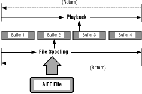

Figure 1: Playing sounds in a continuous sequence
The sound file player is build on top of a general sound spooler. See Using the Sound Spooler for a description.
A development note: the sound file player works better spooling a sound file from CD than it does spooling a sound file from the Macintosh in a development system because the file system on the CD uses DMA.
SoundFilePlayer and some sound buffers.
sfp = CreateSoundFilePlayer ( NUMBUFFS, BUFSIZE, PassBuffers );
CHECKPTR(sfp, "CreateSoundFilePlayer");
Result = LoadSoundFile( sfp, FileName );
CHECKRESULT(Result,"LoadSoundFile");
Result = StartSoundFile( sfp, MAXAMPLITUDE );
CHECKRESULT(Result,"StartSoundFile");
do
{
Result = ServiceSoundFile(sfp, SignalsIn, &SignalsNeeded);
CHECKRESULT(Result,"ServiceSoundFile");
} while ((SignalsNeeded);
Result = StopSoundFile (sfp);
CHECKRESULT(Result,"StopSoundFile");
Result = UnloadSoundFile( sfp );
CHECKRESULT(Result,"UnloadSoundFile");
SoundFilePlayer and associated buffers.
DeleteSoundFilePlayer( sfp );